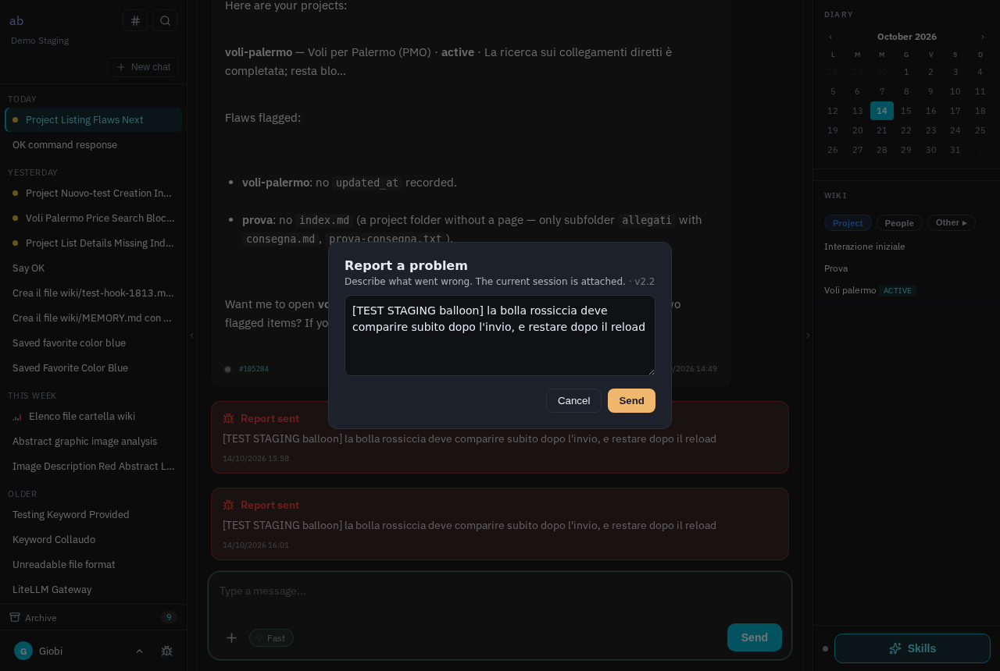
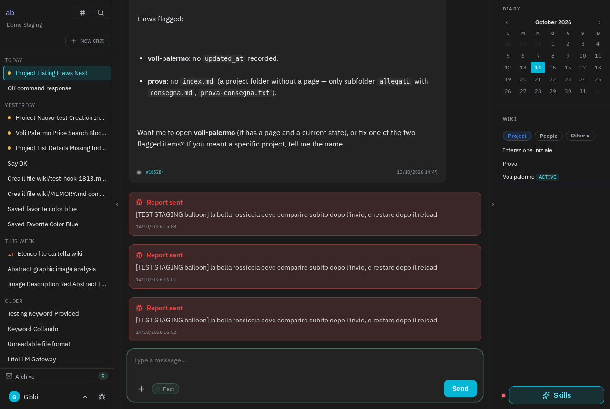
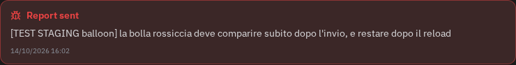

Chi preme il bottone "Segnala un problema" vedeva un ringraziamento per un secondo e mezzo, poi niente: nella chat non restava traccia di cosa aveva segnalato e quando. Ora la segnalazione compare nella chat come un riquadro rossiccio, nel punto in cui è stata mandata, e resta lì anche ricaricando la pagina. Il brain non la legge: non è un messaggio della conversazione. Il codice è su staging e non è stato pubblicato altrove.
Dalla chat aperta si preme l'icona dell'insetto in basso a sinistra e si scrive cosa non va. La segnalazione di prova inizia con [TEST STAGING balloon].

Senza ricaricare la pagina, in fondo alla conversazione compare il riquadro "Report sent" (la lingua segue quella dell'utente: italiano, inglese o francese), con il testo inviato e l'ora. Il rosso è attenuato: si distingue dai messaggi ma non sembra un errore.


La segnalazione è salvata nella storia della chat: ricaricando, i riquadri tornano nello stesso punto. Ce ne sono tre perché la prova è stata ripetuta tre volte nella stessa chat.
| Pezzo | Cosa |
|---|---|
BugReportController@store | Con session_id di una sessione dell'utente su quel brain: riga chat_messages role system, content {type:"bug_report", title, excerpt, village_post_id, reported_at}. La risposta JSON include message, il frontend disegna la bolla senza reload. Senza sessione: nessuna riga, risposta invariata. |
ChatSessionManager::conversation() | history() senza le segnalazioni, usata dai tre punti che costruiscono il prompt (stream, asyncStream, voce). La UI resta su history(). |
WebchatController@history | Ogni messaggio espone bug_report (oggetto o null). |
webchat/index.blade.php | addBugBalloon() + .msg.bug-report (color-mix su --danger, icona lucide bug); i tre loop di render della storia passano da addHistoryMsg(). |
lang/{it,en,fr}/webchat.php | bug_balloon_titolo, bug_balloon_thread, bug_balloon_senza_testo. |
tests/Feature/BugBalloonTest.php: 7/7 verdi (sessione, senza sessione, sessione altrui, esclusione dal prompt, storia, link al thread, lingue).BrainExecJobStatusTest::stale running job (file non toccati da questa modifica; sullo staging ci sono modifiche non committate di un'altra sessione a TurnLiveness).demo: POST 200 con message, bolla presente subito (DOM) e dopo reload; console: zero errori (solo il warning noto di Tailwind CDN).bugs è privato del brain che amministra l'istanza, e per chi segnala il link apriva "Thread non trovato". Ora il server manda village_url (/village/p/N) solo se il brain che guarda può vedere il canale; coperto da test.session_id arriva dal client e la bolla poteva finire nella chat di un altro utente. Ora va solo in una sessione dell'utente su quel brain.bugs di staging.79d4a29 su village-v2, non pushato, non deployato.